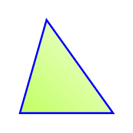

Acutángulo
El triángulo acutángulo es aquel cuyos tres ángulos interiores son agudos, es decir, miden menos que 90º. Esta categoría de triángulo es un caso muy particular dentro de los tipos de triángulo según la medida de sus ángulos internos.
